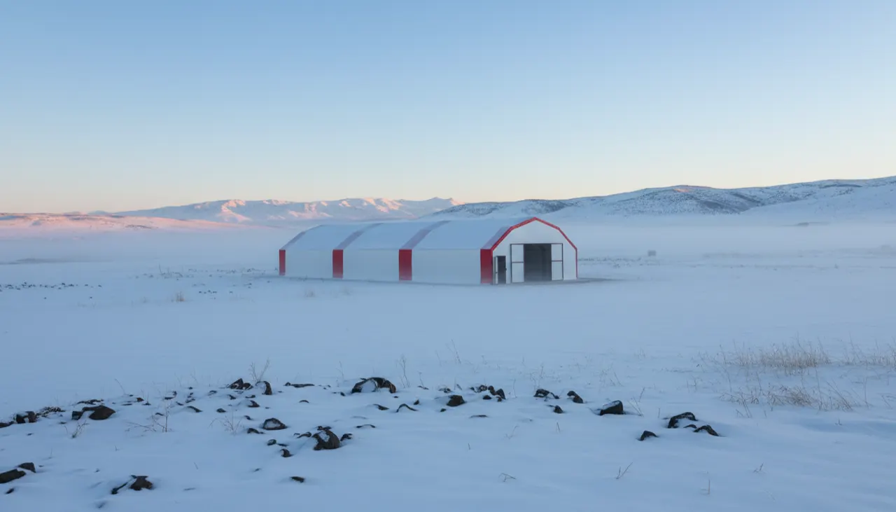

Kars Tavuk Çadırı
Kars'ın -30°C'ye inen gecelerine, plato rüzgârına ve haftalarca kalkmayan karına göre kurulan tavuk çadırı. Nakliye ve kurulum dahil, dört kat yalıtım standart önerimiz.

"Bizim buranın kışını bu çadır kaldırır mı?" Kars'tan gelen ilk telefonlarda soru neredeyse hep aynı yerden başlıyor. Haklı bir tereddüt: geceleri -30°C'yi gören, karın haftalarca kalkmadığı, plato rüzgârının aralıksız estiği bir yerde branda bir yapıya güvenmek kolay değil. O yüzden Kars'ı diğer illerle aynı kefeye koymuyoruz.
Bir kümesi kışın öldüren şey çoğu zaman soğuğun kendisi değil; çatıda biriken kar yükü, iç yüzeyde yoğuşan nem ve profilden geçen cereyandır. Kars bu üç zorlamayı da en sert haliyle bir araya getiren birkaç ilden biri. Bu koşulda çadır kümesin nasıl davrandığını ve neyi standart önerdiğimizi sahadaki mantığıyla anlatalım.
Merkezimiz ve üretimimiz İstanbul'da; Kars'ta şubemiz yok. Yapıyı burada kurup çatısına dek hazır biçimde plakaya gönderiyor, ekibimizle yerinde kuruyoruz. Aradaki 1.430 kilometre ve yaklaşık 20 saatlik yol, nakliye ve kurulum fiyata dahil olduğu için sizin açınızdan bir maliyet kalemi değil, sadece bir takvim meselesi.
-30°C ve haftalarca kalkmayan karın altında ne oluyor
Kars'ta kışı zorlaştıran tek sayı sıcaklık değil. Don, gündüz eriyip gece tekrar buz tutan kar ve plato rüzgârı üst üste biniyor. Böyle bir yerde tek katmanlı bir örtü içeriyi bir gün ısıtır, ertesi sabah terler; o nem tüyde ve altlıkta kalınca solunum sorunları ve donma başlar.
Bizim yapıda dış katman 650 g/m² TSE damgalı, UV dayanımlı, alev yürütmeyen branda; içeride 180 g/m² antibakteriyel, yıkanabilir bir astar var. İkisinin arasına giren alüminyum bizafol yalıtım, iç yüzey sıcaklığını çiy noktasının üstünde tutarak asıl işi yapıyor: yoğuşmayı kesiyor. Kars gibi bir platoda bunun kaç kat olacağı pazarlık konusu değil.
Neden Kars'ta doğrudan 4 kat yalıtım öneriyoruz
Yalıtımı 3 kat ve 4 kat olarak veriyoruz. Ilıman illerde 3 kat çoğu iş için yeter. Kars'ta ise başından 4 kat öneriyoruz, çünkü fark eksilerin derinleştiği gecelerde ortaya çıkıyor: dördüncü katman, gece ile gündüz arasındaki sıcaklık salınımını yumuşatıp iç yüzeyin sürekli buz tutup çözülmesini engelliyor. Sürünün kendi ürettiği ısıyı içeride tutmanın en ekonomik yolu bu; çadıra soba kurmaktan da her zaman daha sağlıklı.
Karın çatıda birikmesi ayrı bir konu. 40x40 / 2 mm galvaniz çelik makas profil iskelet, yükü tepede toplamak yerine eğimli yüzeyler boyunca dağıtır; kar kaymaya meyleder, tek noktada tonlarca ağırlık oluşmaz. Standart bir çadıra göre üç kat dayanıklı olması da tam bu iskeletten ve branda gramajından geliyor.
1.430 km ve 20 saatlik yol Kars'ta nasıl işliyor
Uzaklık en çok merak edilen konu, ama pratikte en az sorun çıkaran kalem. Yapıyı İstanbul'da üretip kuruluma hazır hale getiriyor, TIR'la Kars'a indiriyoruz. Ekibimiz aynı merkezden çıkıyor; "Kars'taki depomuz" gibi bir şey yok, olduğunu da söylemeyiz.
Sipariş sonrası hedefimiz yaklaşık 10 gün içinde kurulu teslim. Kars'ta buna kışın yol ve hava durumu ekleniyor; kar kapanması olan haftalarda kurulum gününü baştan, gerçekçi biçimde netleştiriyoruz. Nakliye ve kurulum ücreti fiyata dahil; sizden beklediğimiz tek şey, ekip gelmeden zeminin, suyun ve elektriğin hazır olması. Bu üç altyapı fiyata dahil değil.
Sarıkamış, Selim, Arpaçay, Kağızman ve Susuz dahil ilin her ilçesine aynı şekilde gidiyoruz; merkeze uzak köyde de kurulum mantığı değişmiyor. Kurulum bölgeleri sayfasından sürecin işleyişine bakabilirsiniz.
Kaz ve köy tavuğunun bir arada olduğu bir yerde çadır
Kars'ın kanatlı kültürü Türkiye'nin çoğu ilinden farklı. Ekonominin belkemiği mera hayvancılığı, kaşar ve gravyer; ama ilin asıl imzası kaz besiciliği. Ticari kanatlı tesisi az, buna karşılık aile işletmelerinde kaz ve köy tavuğu çoğu zaman yan yana yetişiyor.
Çadır kümes tam da bu tabloya oturuyor. Aynı yapı, bölmelendirdiğinizde bir tarafta yumurta tavuğu, diğer tarafta kaz barındırabilir; kaz daha çok alan ve daha yüksek tabana ihtiyaç duyduğu için m² başına hayvan sayısını buna göre düşürmek yeterli. Beton şartımız yok, her zemine kuruyoruz; yine de kaz ve tavukta temizlik yükü yüksek olduğundan hijyen için beton ya da kilit taşı zemini öneriyoruz.
Kapasiteyi ve bütçeyi Kars'a göre seçmek
Ölçüyü hayvan sayısından geri hesaplıyoruz: metrekareye yaklaşık 7 tavuk. 70 m²'lik 7x10 çadır ~500 tavuk alır; kaz gibi iri kanatlıda aynı alana daha az koyup rahat bırakmak gerekir. Kağızman gibi düşük rakımda yumurtayla başlayacaksanız 500'lük ölçek mantıklı bir giriş; sürüyü büyütme niyeti baştan varsa 980 tavukluk 7x20'ye geçmek sonradan ikinci yapı kurmaktan ekonomik.
Fiyatta Kars'ta karar veren kalem yalıtım katı. 7x10 dört kat yalıtımlı 105.000 TL, 7x20 dört kat 195.000 TL — ikisine de nakliye ve kurulum dahil. Rakamların tamamını ve ölçü-kapasite eşleşmesini fiyatlar sayfasında görebilir, 500 tavukluk modelin detayına bakabilirsiniz. Yapı 2 yıl üretim garantili; doğal afet ve kullanım hataları bunun dışında.
Kars'ta don-çözülme döngüsünde altlık ve zemin nasıl kurulur
Kars'ta zeminin altında tutulan iş, üstteki yalıtım kadar belirleyici. Plato toprağı kışın derinden donuyor; gündüz eriyip gece tekrar buz tutan döngü, doğrudan toprağa serilen altlığı alttan nemlendirir. O nem tabana çöktüğünde altlık taban tutar, amonyak kokusu yükselir ve tavuğun ayağı sürekli ıslak kalır. Bunu kırmanın yolu, hayvanla soğuk toprak arasına bir tampon koymaktır.
Kilit taşı ya da beton zemin üstüne 10-15 cm kalınlıkta kuru talaş veya kaba rende serilmesini öneriyoruz; taban ile altlık arasında hava boşluğu kalması, alttan gelen buzu tavuğa geçirmeden yalıtır. Kaz beslediğiniz bölmede altlık daha çabuk ıslanır, orada kürek çevirmeyi sıklaştırmak gerekir. Kışın altlığı komple değiştirmek yerine üstten kuru talaş takviyesiyle götürmek, hem ısıyı hem hijyeni korur; asıl dip temizliğini bahara, don çözülünce bırakmak Kars koşulunda daha pratiktir.
Kars için güncel fiyatlar
Fiyatlara nakliye ve kurulum dahildir; Kars teslimatı da ücretsizdir. 7 farklı ölçünün tamamı için fiyat tablosuna bakabilirsiniz.
Kars için sık sorulanlar
Kars'ın -30°C'ye inen kışında çadır kümes yeterli mi?
Kars'taki yüksek kar yükünü çatı kaldırır mı?
İstanbul'dan Kars'a kurulum gerçekten fiyata dahil mi?
Kars'ta teslim ne kadar sürer?
Aynı çadırda hem tavuk hem kaz besleyebilir miyim?
Kars'ta plato rüzgârına karşı çadırı nasıl konumlandırmalıyım?
İşinize yarayacak rehberler
Kars projenizi birlikte planlayalım
Kapasitenizi ve kurulumu düşündüğünüz ilçeyi yazın; ölçüyü, yalıtımı ve teklifi aynı gün netleştirelim.
WhatsApp'tan yazın